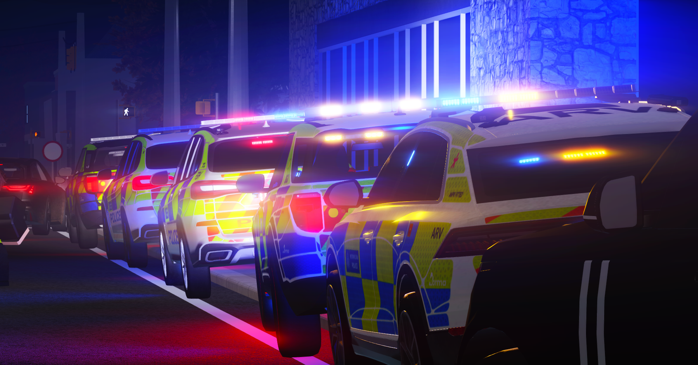

About CAN
The story, mission, and values behind the Croydon Alliance Network.

How CAN Began
The Croydon Alliance Network was founded by a group of dedicated ER:LC server owners who believed the community deserved better. Too many servers were operating in isolation or corrupt networks; no enforced standards, no support, no strength in numbers.
CAN was created to change that. Starting as a small group of like-minded, UK based communities, it quickly became a recognised name in the UK, Ireland and Europe ER:LC space, known for its consistent quality and professional approach to network management.
Today, CAN stands as the leading UK-based ER:LC alliance networks, bringing together servers that share the same commitment to fair play, active staff, and great roleplay experiences.

Our Mission
CAN exists to raise the standard of ER:LC communities. Our mission is straightforward: create an alliance network where quality is non-negotiable, leadership is accountable, and players always have somewhere great to play.
We vet every server that applies. We set clear expectations. And we hold our members to them, because the CAN badge means something.
Whether you're a player looking for a reliable server or a server owner wanting to grow alongside other serious communities, CAN is built for you.
Our Core Values
Every decision CAN makes is guided by these principles.
Integrity
We're honest with ourselves and our members. If something isn't good enough, we say so. No politics, no favouritism.
Quality
Every server in CAN is held to a high standard. We'd rather have fewer excellent members than many mediocre ones.
Community
CAN is stronger together. We encourage collaboration, shared events, and genuine support between alliance members.
Growth
We help member servers grow; in activity, reputation, and playerbase through the network's collective reach.
Accountability
Leadership at CAN is accountable to the network. We lead by example and take responsibility for our decisions.
Professionalism
From how we communicate to how disputes are handled. We keep things professional, always.
Why CAN Was Created
The ER:LC space has plenty of servers. What it lacked was a network that actually held them to a standard. One that players could trust and server owners could be proud to be part of. CAN fills that gap.
We were built because the community deserved better. Servers that get full. Staff that show up. Roleplay that's actually worth your time. CAN isn't just an alliance, it's a commitment to delivering that, consistently, across every member server.